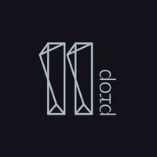
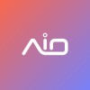
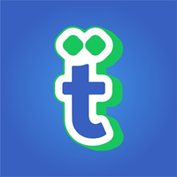
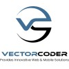
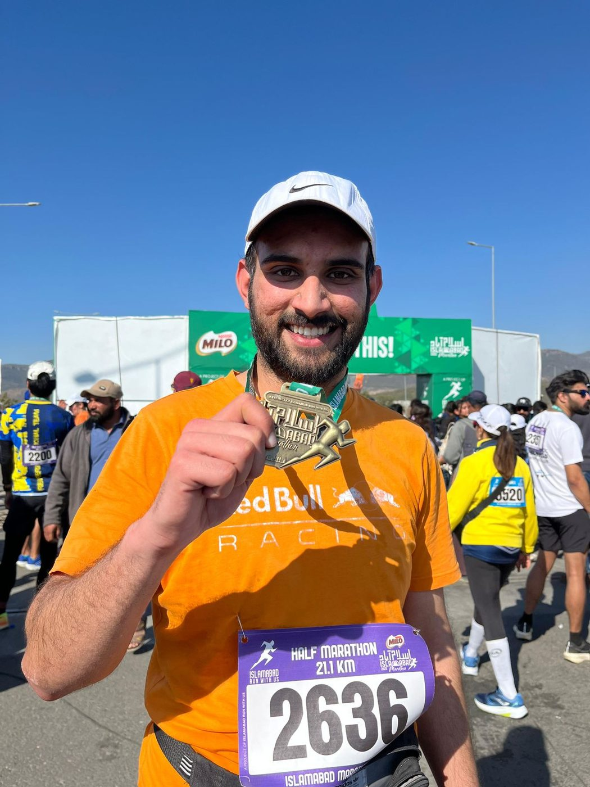
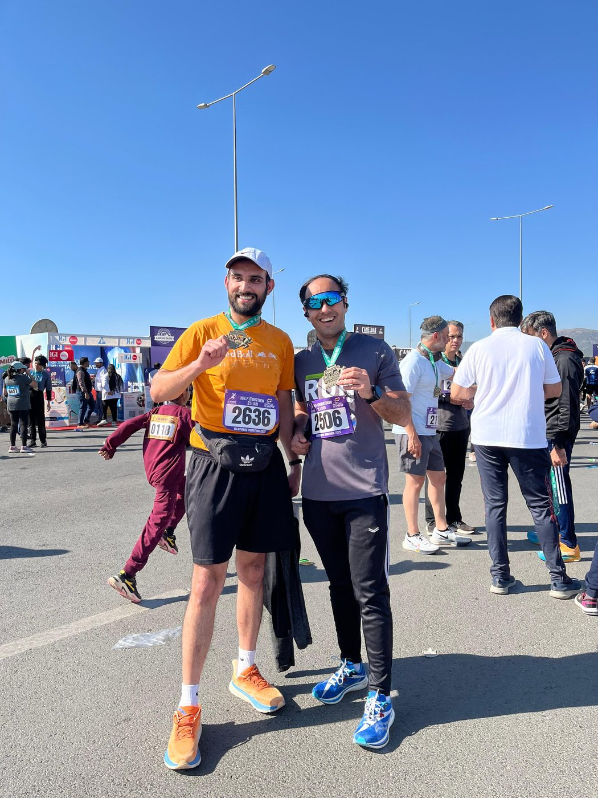
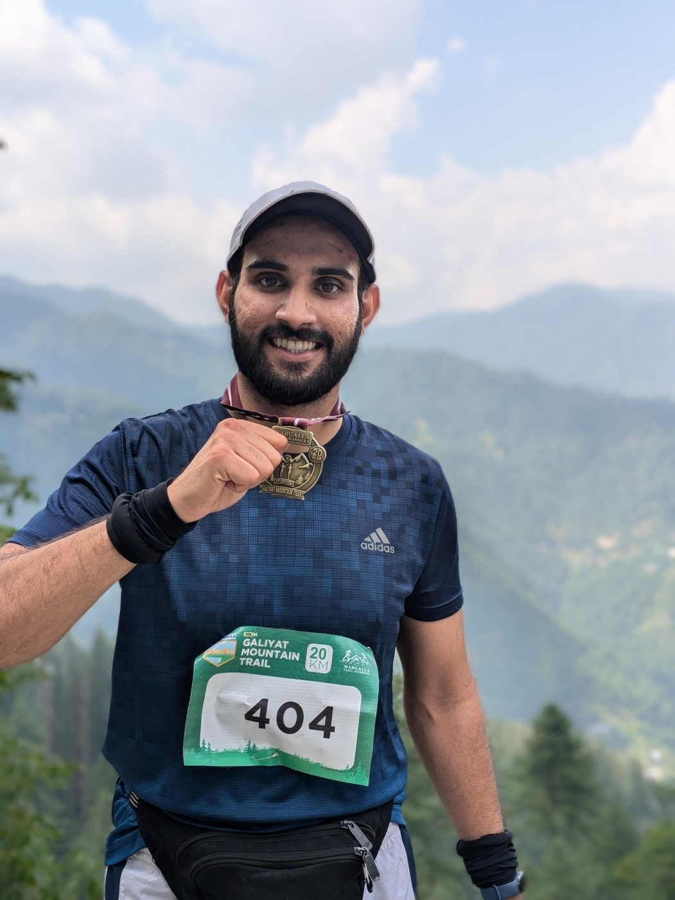
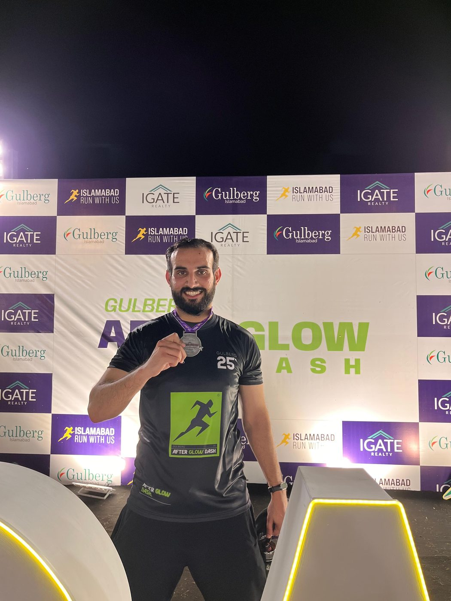
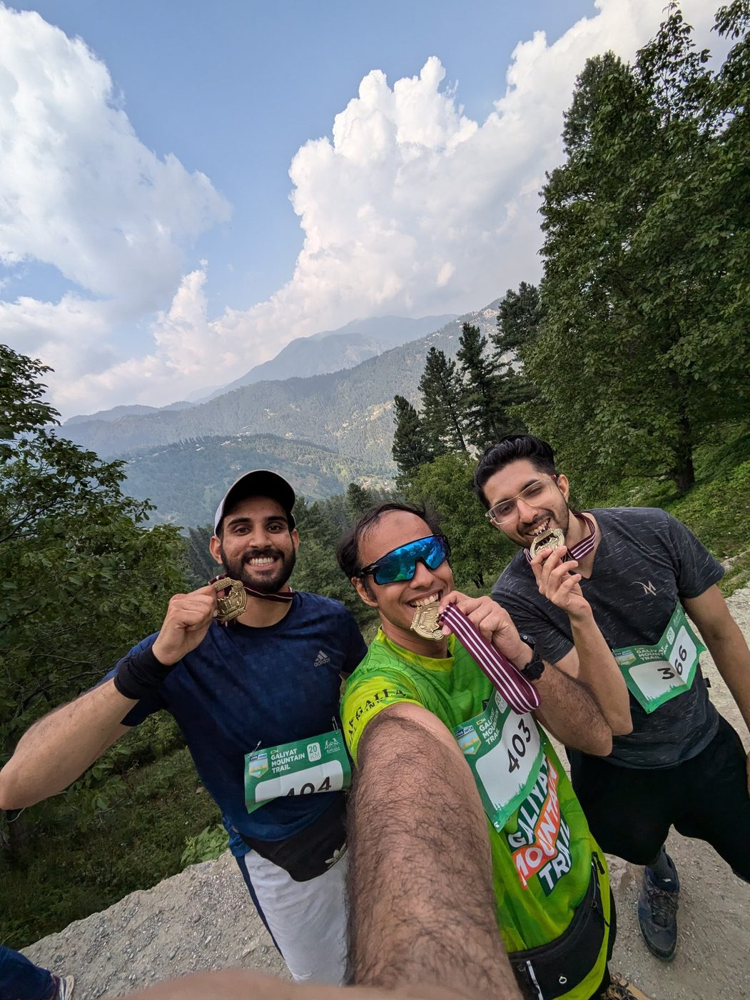
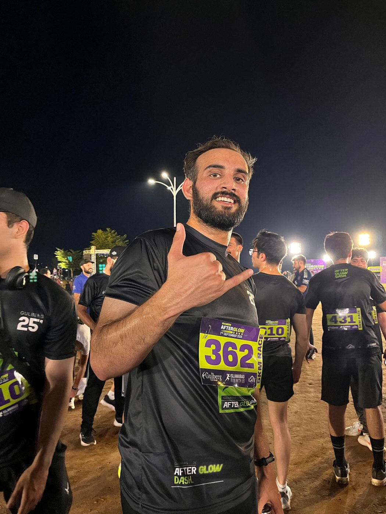

Five years across B2B SaaS, ed-tech and proptech. I came up through design, so I don't just write the spec: I prototype it, instrument it, and increasingly lean on AI and LLM tooling to ship faster and stay in the room until the metric moves.
A Senior Product Manager and product builder with a UI/UX design background. I like living at the point where strategy, data, design and integration work all meet.
I started in design and moved into product because I wanted to own the outcome, not just the interface. That path is still the whole point five years later: I write the PRD, but I also sketch the flow in Figma, define the analytics events before we ship, and stay in the room until the metric actually moves.
I can sit with an engineer on an API integration, write the SQL to check whether a funnel is really converting, and still walk a stakeholder through the tradeoff in plain language. The spec, the prototype, the instrumentation and the conversation aren't separate jobs to me; they're one job, and I use frameworks like SAM, TAM and PMF to keep it honest about product-market fit.
I've worked across B2B SaaS in the US, B2G ed-tech in Pakistan, and a 0→1 proptech launch in the UAE, because the work underneath is always the same: find the real problem, ship the smallest thing that closes it, and measure honestly. I'm increasingly applying AI and LLM tooling to that loop, from MCP integrations to AI-assisted design, to close it faster. Before moving fully into product, I spent two years as a Product Designer, which is why I still care as much about a component library as I do about a roadmap.
A Silicon Valley restaurant-tech scale-up, a 0→1 proptech launch in Dubai, an ed-tech platform reaching hundreds of thousands of schools, and hands-on product design.




So a spec never stalls waiting on someone else. I move between the roadmap and the tools that ship it.
I started as a product designer, so I can make the thing, not just describe it: from clickable prototypes to AI-assisted design that keeps a team consistent and fast.
I define the events before we ship, not after. I can write the SQL to check whether a funnel is actually converting and read the retention curve without waiting on a data team.
Increasingly, I reach for AI and LLM tooling before I reach for a headcount request: MCP integrations, AI design tools and internal automation that collapse week-long tasks into hours.
I keep engineers, design and leadership pointed at the same outcome: clear PRDs, honest prioritization, and stakeholder updates that name the tradeoff instead of hiding it.
The headline outcomes from each role, pulled out of the day-to-day.
A repeatable loop from ambiguity to shipped, measured impact.
Stakeholder interviews, usability research and market sizing (SAM, TAM, PMF) to frame the real problem.
PRDs, roadmaps and OKR alignment, paired with wireframes and user personas.
Prototyping, usability testing, feature flagging and A/B tests before anything ships broadly.
Phased rollout with funnel and retention monitoring, then fast iteration on what the data shows.
Outside of product, I run. Half marathons, night races, mountain trails; the sport where the backlog is just called "next weekend."





